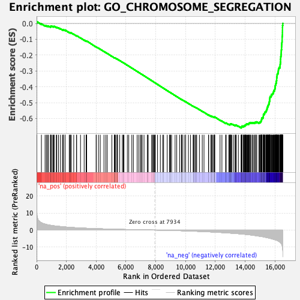
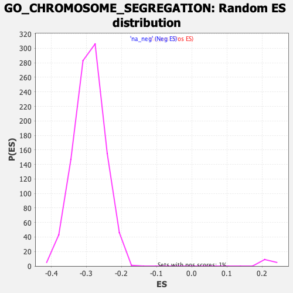

| | | Dataset | DE_genes2 |
| Phenotype | NoPhenotypeAvailable |
| Upregulated in class | na_neg |
| GeneSet | GO_CHROMOSOME_SEGREGATION |
| Enrichment Score (ES) | -0.65948725 |
| Normalized Enrichment Score (NES) | -2.257773 |
| Nominal p-value | 0.0 |
| FDR q-value | 0.0 |
| FWER p-Value | 0.0 |
Table: GSEA Results Summary

Fig 1: Enrichment plot: GO_CHROMOSOME_SEGREGATION
Profile of the Running ES Score & Positions of GeneSet Members on the Rank Ordered List
| PROBE | GENE SYMBOL | GENE_TITLE | RANK IN GENE LIST | RANK METRIC SCORE | RUNNING ES | CORE ENRICHMENT | | 1 | LCMT1 | | | 10 | 11.072 | 0.0120 | No |
| 2 | MEI1 | | | 323 | 4.320 | -0.0023 | No |
| 3 | CHMP4B | | | 569 | 3.511 | -0.0134 | No |
| 4 | CHMP1A | | | 654 | 3.296 | -0.0148 | No |
| 5 | CHTF8 | | | 727 | 3.153 | -0.0156 | No |
| 6 | SIRT2 | | | 789 | 3.063 | -0.0159 | No |
| 7 | MAD1L1 | | | 922 | 2.842 | -0.0208 | No |
| 8 | SYCE3 | | | 952 | 2.793 | -0.0194 | No |
| 9 | CDC42 | | | 954 | 2.787 | -0.0163 | No |
| 10 | MMS19 | | | 1030 | 2.699 | -0.0178 | No |
| 11 | TUBG2 | | | 1106 | 2.598 | -0.0195 | No |
| 12 | ARL8A | | | 1156 | 2.531 | -0.0196 | No |
| 13 | BECN1 | | | 1180 | 2.496 | -0.0182 | No |
| 14 | NAA60 | | | 1318 | 2.338 | -0.0239 | No |
| 15 | KLHL22 | | | 1357 | 2.307 | -0.0236 | No |
| 16 | DIS3L2 | | | 1472 | 2.205 | -0.0281 | No |
| 17 | PPP2R1A | | | 1600 | 2.090 | -0.0336 | No |
| 18 | RECQL5 | | | 1740 | 1.959 | -0.0399 | No |
| 19 | SYCE1L | | | 1786 | 1.927 | -0.0405 | No |
| 20 | RAB11A | | | 1794 | 1.923 | -0.0387 | No |
| 21 | PHF23 | | | 1909 | 1.832 | -0.0436 | No |
| 22 | CHMP6 | | | 1910 | 1.829 | -0.0416 | No |
| 23 | KATNB1 | | | 2191 | 1.627 | -0.0569 | No |
| 24 | CENPT | | | 2253 | 1.586 | -0.0589 | No |
| 25 | ANKRD53 | | | 2269 | 1.580 | -0.0580 | No |
| 26 | NEK11 | | | 2331 | 1.542 | -0.0600 | No |
| 27 | NUMA1 | | | 2493 | 1.446 | -0.0683 | No |
| 28 | AKAP8L | | | 2675 | 1.352 | -0.0779 | No |
| 29 | MAU2 | | | 2690 | 1.342 | -0.0772 | No |
| 30 | RGS14 | | | 2947 | 1.217 | -0.0916 | No |
| 31 | KLHDC8B | | | 3192 | 1.113 | -0.1053 | No |
| 32 | PHF13 | | | 3322 | 1.068 | -0.1120 | No |
| 33 | CHMP2A | | | 3341 | 1.061 | -0.1119 | No |
| 34 | M1AP | | | 3343 | 1.061 | -0.1108 | No |
| 35 | DDX11 | | | 3360 | 1.054 | -0.1106 | No |
| 36 | DYNC1H1 | | | 3996 | 0.838 | -0.1487 | No |
| 37 | NDE1 | | | 4008 | 0.835 | -0.1484 | No |
| 38 | CTNNB1 | | | 4151 | 0.794 | -0.1562 | No |
| 39 | ERCC2 | | | 4271 | 0.758 | -0.1627 | No |
| 40 | RNF212 | | | 4522 | 0.687 | -0.1773 | No |
| 41 | P3H4 | | | 4647 | 0.650 | -0.1842 | No |
| 42 | AXIN2 | | | 4742 | 0.627 | -0.1892 | No |
| 43 | PUM1 | | | 5052 | 0.557 | -0.2076 | No |
| 44 | TOP3B | | | 5214 | 0.515 | -0.2169 | No |
| 45 | NEK8 | | | 5229 | 0.512 | -0.2172 | No |
| 46 | EME2 | | | 5252 | 0.504 | -0.2180 | No |
| 47 | AURKC | | | 5270 | 0.499 | -0.2185 | No |
| 48 | AGO4 | | | 5333 | 0.484 | -0.2217 | No |
| 49 | SYCE2 | | | 5414 | 0.467 | -0.2261 | No |
| 50 | POGZ | | | 5425 | 0.465 | -0.2262 | No |
| 51 | CHMP4C | | | 5432 | 0.464 | -0.2260 | No |
| 52 | PMF1 | | | 5580 | 0.431 | -0.2346 | No |
| 53 | RCC2 | | | 5757 | 0.393 | -0.2450 | No |
| 54 | NDEL1 | | | 5819 | 0.381 | -0.2483 | No |
| 55 | BAG6 | | | 5863 | 0.373 | -0.2505 | No |
| 56 | STAG3L4 | | | 6092 | 0.327 | -0.2642 | No |
| 57 | MAPK15 | | | 6185 | 0.308 | -0.2695 | No |
| 58 | ANAPC15 | | | 6393 | 0.265 | -0.2819 | No |
| 59 | TRAPPC12 | | | 6496 | 0.246 | -0.2879 | No |
| 60 | BEX4 | | | 6749 | 0.193 | -0.3032 | No |
| 61 | CIAO1 | | | 6856 | 0.176 | -0.3095 | No |
| 62 | VPS4A | | | 6963 | 0.161 | -0.3158 | No |
| 63 | CHMP7 | | | 7021 | 0.151 | -0.3192 | No |
| 64 | STAG3L2 | | | 7090 | 0.137 | -0.3232 | No |
| 65 | SLX4 | | | 7210 | 0.114 | -0.3304 | No |
| 66 | CENPW | | | 7436 | 0.075 | -0.3441 | No |
| 67 | RNF212B | | | 7440 | 0.075 | -0.3442 | No |
| 68 | NCAPH2 | | | 7491 | 0.067 | -0.3472 | No |
| 69 | STAG3 | | | 7725 | 0.029 | -0.3615 | No |
| 70 | REC8 | | | 7773 | 0.021 | -0.3644 | No |
| 71 | MAD2L2 | | | 7828 | 0.012 | -0.3677 | No |
| 72 | CHMP1B | | | 7855 | 0.010 | -0.3693 | No |
| 73 | UBE2I | | | 7911 | 0.003 | -0.3727 | No |
| 74 | TUBG1 | | | 7955 | -0.003 | -0.3753 | No |
| 75 | MUS81 | | | 7965 | -0.006 | -0.3759 | No |
| 76 | HDAC8 | | | 8117 | -0.029 | -0.3851 | No |
| 77 | NTMT1 | | | 8306 | -0.058 | -0.3966 | No |
| 78 | ANAPC5 | | | 8465 | -0.087 | -0.4062 | No |
| 79 | RIOK3 | | | 8526 | -0.098 | -0.4098 | No |
| 80 | PSMG2 | | | 8766 | -0.147 | -0.4243 | No |
| 81 | SPICE1 | | | 8926 | -0.177 | -0.4339 | No |
| 82 | ZNF207 | | | 8957 | -0.183 | -0.4356 | No |
| 83 | SUN1 | | | 8992 | -0.191 | -0.4374 | No |
| 84 | ARL8B | | | 9063 | -0.206 | -0.4415 | No |
| 85 | CHMP5 | | | 9296 | -0.265 | -0.4555 | No |
| 86 | PHB2 | | | 9406 | -0.290 | -0.4619 | No |
| 87 | UVRAG | | | 9604 | -0.340 | -0.4736 | No |
| 88 | TOP3A | | | 9720 | -0.375 | -0.4802 | No |
| 89 | HECW2 | | | 9745 | -0.384 | -0.4813 | No |
| 90 | NUP62 | | | 9747 | -0.384 | -0.4809 | No |
| 91 | SYCP2 | | | 9779 | -0.393 | -0.4824 | No |
| 92 | STAG3L1 | | | 9908 | -0.431 | -0.4897 | No |
| 93 | NAA10 | | | 10004 | -0.462 | -0.4951 | No |
| 94 | MAP10 | | | 10009 | -0.463 | -0.4948 | No |
| 95 | CEP85 | | | 10192 | -0.523 | -0.5054 | No |
| 96 | C14orf39 | | | 10332 | -0.562 | -0.5133 | No |
| 97 | TNKS | | | 10513 | -0.630 | -0.5236 | No |
| 98 | VPS4B | | | 10518 | -0.632 | -0.5232 | No |
| 99 | UBE2B | | | 10564 | -0.649 | -0.5252 | No |
| 100 | NSMCE2 | | | 10641 | -0.675 | -0.5291 | No |
| 101 | NEK6 | | | 10708 | -0.693 | -0.5324 | No |
| 102 | SRPK1 | | | 10746 | -0.707 | -0.5338 | No |
| 103 | CCNB1IP1 | | | 10929 | -0.775 | -0.5442 | No |
| 104 | CSNK2A2 | | | 11120 | -0.849 | -0.5549 | No |
| 105 | CDC23 | | | 11236 | -0.896 | -0.5609 | No |
| 106 | CSNK2A1 | | | 11539 | -1.024 | -0.5783 | No |
| 107 | PTTG3P | | | 11552 | -1.029 | -0.5779 | No |
| 108 | RPS3 | | | 11701 | -1.086 | -0.5858 | No |
| 109 | ANAPC11 | | | 11722 | -1.095 | -0.5858 | No |
| 110 | HIRA | | | 11750 | -1.109 | -0.5862 | No |
| 111 | TTN | | | 11813 | -1.138 | -0.5887 | No |
| 112 | SETDB2 | | | 11887 | -1.173 | -0.5918 | No |
| 113 | MCMDC2 | | | 11931 | -1.189 | -0.5931 | No |
| 114 | BANF1 | | | 11943 | -1.194 | -0.5924 | No |
| 115 | PINX1 | | | 11950 | -1.196 | -0.5915 | No |
| 116 | DYNC1LI1 | | | 11956 | -1.198 | -0.5904 | No |
| 117 | RCC1 | | | 12313 | -1.379 | -0.6107 | No |
| 118 | TEX15 | | | 12439 | -1.445 | -0.6168 | No |
| 119 | CCNE1 | | | 12690 | -1.585 | -0.6303 | No |
| 120 | XRCC3 | | | 12710 | -1.592 | -0.6297 | No |
| 121 | DUSP1 | | | 12720 | -1.599 | -0.6284 | No |
| 122 | CDC26 | | | 12894 | -1.710 | -0.6371 | No |
| 123 | RAN | | | 12950 | -1.743 | -0.6385 | No |
| 124 | CTCF | | | 12974 | -1.752 | -0.6379 | No |
| 125 | TLK2 | | | 12985 | -1.756 | -0.6366 | No |
| 126 | ANKRD31 | | | 12998 | -1.768 | -0.6353 | No |
| 127 | KIF22 | | | 13043 | -1.792 | -0.6360 | No |
| 128 | NSL1 | | | 13055 | -1.802 | -0.6346 | No |
| 129 | GEM | | | 13104 | -1.827 | -0.6355 | No |
| 130 | BOD1 | | | 13214 | -1.899 | -0.6400 | No |
| 131 | SMC1A | | | 13325 | -1.971 | -0.6445 | No |
| 132 | CHMP4A | | | 13336 | -1.978 | -0.6429 | No |
| 133 | ACTR3 | | | 13382 | -2.016 | -0.6434 | No |
| 134 | CDT1 | | | 13400 | -2.026 | -0.6421 | No |
| 135 | FBXW7 | | | 13543 | -2.127 | -0.6484 | No |
| 136 | IK | | | 13724 | -2.259 | -0.6569 | Yes |
| 137 | MLH1 | | | 13750 | -2.282 | -0.6559 | Yes |
| 138 | MCMBP | | | 13751 | -2.284 | -0.6533 | Yes |
| 139 | LATS1 | | | 13781 | -2.313 | -0.6524 | Yes |
| 140 | NCAPD2 | | | 13788 | -2.321 | -0.6501 | Yes |
| 141 | SLC25A5 | | | 13792 | -2.324 | -0.6477 | Yes |
| 142 | AKAP8 | | | 13879 | -2.396 | -0.6502 | Yes |
| 143 | DSN1 | | | 13907 | -2.424 | -0.6491 | Yes |
| 144 | FEN1 | | | 13911 | -2.426 | -0.6466 | Yes |
| 145 | INCENP | | | 13962 | -2.468 | -0.6468 | Yes |
| 146 | KPNB1 | | | 13985 | -2.485 | -0.6454 | Yes |
| 147 | CHMP2B | | | 13987 | -2.487 | -0.6426 | Yes |
| 148 | CDK5RAP2 | | | 14033 | -2.527 | -0.6425 | Yes |
| 149 | MEIOB | | | 14036 | -2.533 | -0.6397 | Yes |
| 150 | NEK2 | | | 14051 | -2.552 | -0.6377 | Yes |
| 151 | NUP37 | | | 14072 | -2.573 | -0.6360 | Yes |
| 152 | NCAPD3 | | | 14122 | -2.615 | -0.6360 | Yes |
| 153 | NUP43 | | | 14154 | -2.649 | -0.6349 | Yes |
| 154 | DMC1 | | | 14196 | -2.689 | -0.6344 | Yes |
| 155 | FMN2 | | | 14245 | -2.740 | -0.6342 | Yes |
| 156 | KNSTRN | | | 14258 | -2.748 | -0.6318 | Yes |
| 157 | ESPL1 | | | 14262 | -2.749 | -0.6289 | Yes |
| 158 | RRS1 | | | 14305 | -2.785 | -0.6283 | Yes |
| 159 | FAM83D | | | 14362 | -2.844 | -0.6285 | Yes |
| 160 | PCID2 | | | 14369 | -2.855 | -0.6256 | Yes |
| 161 | PTTG1 | | | 14464 | -2.952 | -0.6280 | Yes |
| 162 | NDC1 | | | 14488 | -2.975 | -0.6261 | Yes |
| 163 | BUB3 | | | 14549 | -3.043 | -0.6263 | Yes |
| 164 | CDC27 | | | 14637 | -3.170 | -0.6280 | Yes |
| 165 | MIS12 | | | 14669 | -3.210 | -0.6263 | Yes |
| 166 | ZW10 | | | 14679 | -3.216 | -0.6232 | Yes |
| 167 | ESCO1 | | | 14761 | -3.316 | -0.6244 | Yes |
| 168 | USP9X | | | 14776 | -3.332 | -0.6215 | Yes |
| 169 | RAD51C | | | 14925 | -3.543 | -0.6265 | Yes |
| 170 | RACGAP1 | | | 14957 | -3.580 | -0.6244 | Yes |
| 171 | NR3C1 | | | 15016 | -3.666 | -0.6238 | Yes |
| 172 | TACC3 | | | 15038 | -3.698 | -0.6208 | Yes |
| 173 | HNRNPU | | | 15058 | -3.735 | -0.6178 | Yes |
| 174 | TLK1 | | | 15070 | -3.749 | -0.6142 | Yes |
| 175 | KIF4B | | | 15081 | -3.764 | -0.6105 | Yes |
| 176 | CENPN | | | 15099 | -3.785 | -0.6072 | Yes |
| 177 | ZWINT | | | 15107 | -3.798 | -0.6033 | Yes |
| 178 | MIS18A | | | 15108 | -3.798 | -0.5990 | Yes |
| 179 | DDX3X | | | 15126 | -3.818 | -0.5957 | Yes |
| 180 | ERCC4 | | | 15195 | -3.914 | -0.5954 | Yes |
| 181 | NIPBL | | | 15209 | -3.928 | -0.5918 | Yes |
| 182 | ANAPC1 | | | 15217 | -3.941 | -0.5877 | Yes |
| 183 | ATM | | | 15219 | -3.945 | -0.5833 | Yes |
| 184 | DDX12P | | | 15223 | -3.954 | -0.5790 | Yes |
| 185 | CDCA8 | | | 15225 | -3.955 | -0.5745 | Yes |
| 186 | SEH1L | | | 15275 | -4.073 | -0.5729 | Yes |
| 187 | MSTO1 | | | 15301 | -4.116 | -0.5698 | Yes |
| 188 | HORMAD1 | | | 15302 | -4.116 | -0.5651 | Yes |
| 189 | CHAMP1 | | | 15322 | -4.154 | -0.5615 | Yes |
| 190 | SPAG5 | | | 15339 | -4.181 | -0.5577 | Yes |
| 191 | CDCA5 | | | 15393 | -4.273 | -0.5561 | Yes |
| 192 | CDC20 | | | 15404 | -4.309 | -0.5519 | Yes |
| 193 | CUL3 | | | 15431 | -4.357 | -0.5485 | Yes |
| 194 | RMI2 | | | 15440 | -4.370 | -0.5440 | Yes |
| 195 | RIOK2 | | | 15454 | -4.393 | -0.5398 | Yes |
| 196 | GEN1 | | | 15480 | -4.447 | -0.5363 | Yes |
| 197 | INO80 | | | 15484 | -4.450 | -0.5314 | Yes |
| 198 | PIBF1 | | | 15494 | -4.463 | -0.5269 | Yes |
| 199 | TRIP13 | | | 15527 | -4.544 | -0.5237 | Yes |
| 200 | RAD18 | | | 15531 | -4.556 | -0.5187 | Yes |
| 201 | SKA2 | | | 15559 | -4.611 | -0.5151 | Yes |
| 202 | MLH3 | | | 15568 | -4.628 | -0.5103 | Yes |
| 203 | ATRX | | | 15599 | -4.719 | -0.5068 | Yes |
| 204 | SFPQ | | | 15601 | -4.724 | -0.5015 | Yes |
| 205 | TTL | | | 15619 | -4.760 | -0.4971 | Yes |
| 206 | PLK1 | | | 15623 | -4.763 | -0.4919 | Yes |
| 207 | CCNB1 | | | 15643 | -4.796 | -0.4876 | Yes |
| 208 | KIFC1 | | | 15645 | -4.799 | -0.4822 | Yes |
| 209 | CENPC | | | 15651 | -4.807 | -0.4770 | Yes |
| 210 | OIP5 | | | 15659 | -4.836 | -0.4719 | Yes |
| 211 | EME1 | | | 15663 | -4.840 | -0.4666 | Yes |
| 212 | FANCD2 | | | 15673 | -4.860 | -0.4616 | Yes |
| 213 | BIRC5 | | | 15741 | -4.998 | -0.4601 | Yes |
| 214 | ACTR2 | | | 15753 | -5.013 | -0.4550 | Yes |
| 215 | PDS5B | | | 15754 | -5.018 | -0.4493 | Yes |
| 216 | RB1 | | | 15805 | -5.145 | -0.4466 | Yes |
| 217 | NCAPH | | | 15843 | -5.247 | -0.4429 | Yes |
| 218 | TOP1 | | | 15882 | -5.336 | -0.4391 | Yes |
| 219 | PDS5A | | | 15889 | -5.372 | -0.4334 | Yes |
| 220 | APC | | | 15912 | -5.426 | -0.4286 | Yes |
| 221 | RAD21 | | | 15930 | -5.459 | -0.4234 | Yes |
| 222 | NAA50 | | | 15974 | -5.568 | -0.4197 | Yes |
| 223 | FANCM | | | 15986 | -5.624 | -0.4140 | Yes |
| 224 | TPR | | | 16001 | -5.664 | -0.4084 | Yes |
| 225 | PSRC1 | | | 16011 | -5.700 | -0.4025 | Yes |
| 226 | SMC5 | | | 16016 | -5.725 | -0.3962 | Yes |
| 227 | TERF1 | | | 16025 | -5.742 | -0.3901 | Yes |
| 228 | MAD2L1 | | | 16043 | -5.805 | -0.3846 | Yes |
| 229 | KIF2C | | | 16061 | -5.848 | -0.3790 | Yes |
| 230 | ECT2 | | | 16082 | -5.906 | -0.3735 | Yes |
| 231 | KIF18B | | | 16087 | -5.923 | -0.3670 | Yes |
| 232 | PRC1 | | | 16103 | -5.960 | -0.3611 | Yes |
| 233 | CCNE2 | | | 16115 | -5.986 | -0.3550 | Yes |
| 234 | SKA3 | | | 16116 | -5.989 | -0.3482 | Yes |
| 235 | AURKB | | | 16120 | -6.007 | -0.3415 | Yes |
| 236 | SPC25 | | | 16131 | -6.050 | -0.3352 | Yes |
| 237 | BUB1 | | | 16142 | -6.084 | -0.3289 | Yes |
| 238 | SKA1 | | | 16146 | -6.104 | -0.3222 | Yes |
| 239 | FBXO5 | | | 16169 | -6.210 | -0.3165 | Yes |
| 240 | HJURP | | | 16210 | -6.380 | -0.3117 | Yes |
| 241 | CENPQ | | | 16214 | -6.395 | -0.3046 | Yes |
| 242 | KIF4A | | | 16226 | -6.459 | -0.2979 | Yes |
| 243 | SPDL1 | | | 16232 | -6.486 | -0.2908 | Yes |
| 244 | ANAPC4 | | | 16245 | -6.526 | -0.2841 | Yes |
| 245 | SMARCAD1 | | | 16278 | -6.759 | -0.2784 | Yes |
| 246 | BUB1B | | | 16335 | -7.102 | -0.2738 | Yes |
| 247 | ESCO2 | | | 16342 | -7.133 | -0.2660 | Yes |
| 248 | KIF23 | | | 16347 | -7.203 | -0.2581 | Yes |
| 249 | DSCC1 | | | 16359 | -7.253 | -0.2505 | Yes |
| 250 | BRIP1 | | | 16369 | -7.368 | -0.2427 | Yes |
| 251 | NUSAP1 | | | 16374 | -7.420 | -0.2345 | Yes |
| 252 | CDC6 | | | 16375 | -7.439 | -0.2260 | Yes |
| 253 | NUF2 | | | 16382 | -7.475 | -0.2178 | Yes |
| 254 | CDCA2 | | | 16385 | -7.530 | -0.2094 | Yes |
| 255 | RMI1 | | | 16408 | -7.835 | -0.2018 | Yes |
| 256 | BRCA1 | | | 16413 | -7.892 | -0.1931 | Yes |
| 257 | STAG2 | | | 16417 | -7.973 | -0.1842 | Yes |
| 258 | SMC4 | | | 16421 | -7.981 | -0.1753 | Yes |
| 259 | STAG1 | | | 16427 | -8.038 | -0.1665 | Yes |
| 260 | TTK | | | 16444 | -8.189 | -0.1581 | Yes |
| 261 | PUM2 | | | 16445 | -8.221 | -0.1488 | Yes |
| 262 | SMC6 | | | 16450 | -8.331 | -0.1395 | Yes |
| 263 | SMC3 | | | 16453 | -8.381 | -0.1301 | Yes |
| 264 | SMC2 | | | 16464 | -8.568 | -0.1210 | Yes |
| 265 | TOP2B | | | 16475 | -8.798 | -0.1116 | Yes |
| 266 | DLGAP5 | | | 16482 | -9.145 | -0.1016 | Yes |
| 267 | MKI67 | | | 16483 | -9.193 | -0.0911 | Yes |
| 268 | CENPK | | | 16485 | -9.298 | -0.0806 | Yes |
| 269 | TOP2A | | | 16497 | -9.873 | -0.0700 | Yes |
| 270 | KIF18A | | | 16499 | -9.952 | -0.0587 | Yes |
| 271 | CENPE | | | 16501 | -10.010 | -0.0474 | Yes |
| 272 | KIF14 | | | 16503 | -10.060 | -0.0360 | Yes |
| 273 | NCAPG | | | 16504 | -10.079 | -0.0245 | Yes |
| 274 | CENPF | | | 16507 | -10.688 | -0.0125 | Yes |
| 275 | NDC80 | | | 16527 | -12.233 | 0.0002 | Yes |
Table: GSEA details [plain text format]

Fig 2: GO_CHROMOSOME_SEGREGATION: Random ES distribution
Gene set null distribution of ES for GO_CHROMOSOME_SEGREGATION